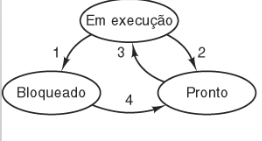
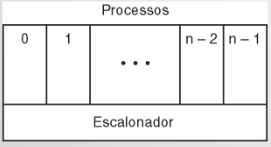
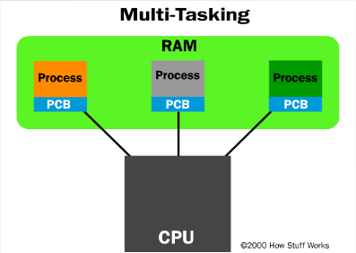
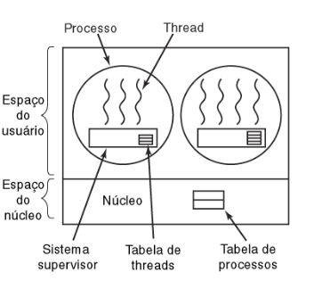
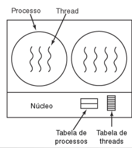
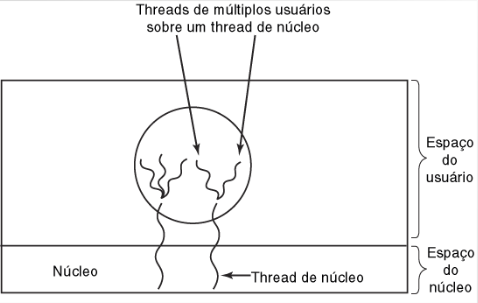

⬅ voltar resumão
🤓 RESUMO: Processos e threads 💻
Conceito, contexto, espaço de endereçamento
Definição de processo
Processo é um programa em execução. Acompanhado dos valores atuais do PC,
registradores e variáveis.
Contexto de processo
É tudo que o processo precisa para sua execução, como processadores, memória, posição
em uso e seu espaço de endereçamento, estados de processor, etc.
Criação de processos
Principais eventos que levam à criação de processos:
- Início do sistema
- Execução de chamada ao sistema de criação de processos
- Solicitação do usuário para criar um novo processo
- Início de um job em lote
Término de Processos
Condições que levam ao término de processos:
- Saída normal (voluntária)
- Saída por erro (voluntária)
- Erro fatal (involuntário)
- Cancelamento por um outro processo (involuntário)
Estados de processos
Possíveis estados de processos:
- Em execução
- Bloqueado
- Pronto

- O processo bloqueia aguardando entrada
- O escalonador seleciona outro processo
- O escalonador seleciona esse processo
- A entrada torna-se disponível
Camadas de processos

- Camada mais inferior de um SO estruturado por processos
(trata interrupções, escalonamento, espaço de endereçamento)
- Acima daquela camada estão os processos sequenciais
Escalonamento de processos
- A parte do sistema operacional responsável por essa decisão é chamada escalonador.
O algoritmo usado para tal é chamado de algoritmo de escalonamento.
- Para que um processo não execute tempo demais, são usadas interrupções de relógio
Implementação de processos
Processo = estrutura de dados
Múltiplos processos

PCB = Process Control Block, mantém info de gerenciamento do processo
Threads
Uma thread é uma linha de execução de código
que executa em paralelo com outras linhas do
mesmo processo, compartilhando seu espaço de
memória.
Diferenças entre threads e processos
Vantagens das threads:
- Mais rápidas de criar
- Como compartilham o mesmo espaço de endereçamento
a comunicação entre elas é mais rápida.
Desvantagens:
- Tornam o código mais complexo.
Motivação para threads: Concorrência
Problemas:
- Programas que precisam de mais poder computacional
- Dificuldade de implementação de CPUs mais rápidas
- Processos gastam tempo demais com entrada e saída
Solução:
- Construção de computadores capazes de executar várias tarefas simultaneamente
Problemas com concorrência
- Não determinismo
- Dependência de velocidade (depende de qual função terminar primeiro)
- Starvation: processo de baixa prioridade precisa de um recurso que nunca é fornecido a ele.
- Deadlock: dois ou mais processos bloqueiam sua execuçãopois um precisa de um recurso bloqueado pelo outro
Modelo de thread
Itens por thread: contador de programa, registradores
pilha e estado.
Implementação de threads de usuário

Vantagens das threads em modo usuário:
- Mais escaláveis (sem espaço de tabela ou pilha no núcleo)
- Permitem personalização do escalonamento
- Exigem menos transições entre modo usuário e modo núcleo.
Troca de contexto eficiente entre threads.
Desvantagens das threads em modo usuário:
- É difícil implementar chamadas de sistema com bloqueio.
- Page faults bloqueiam todas as threads de um processo
- Exigem uma infraestrutura adicional de tempo de execução
- Não se beneficiam de suporte de hardware para acelerar múltiplas threads
Implementação de threads de núcleo

- Não apresentam vários dos problemas das threads em modo usuário
- Mais pesadas em termos de consumo de recursos, overhead na criação
- Pouca flexibilidade para gerenciar o escalonamento
- Comumente recicladas
Implementações híbridas
Multiplexação de threads de usuário sobre threads de núcleo
